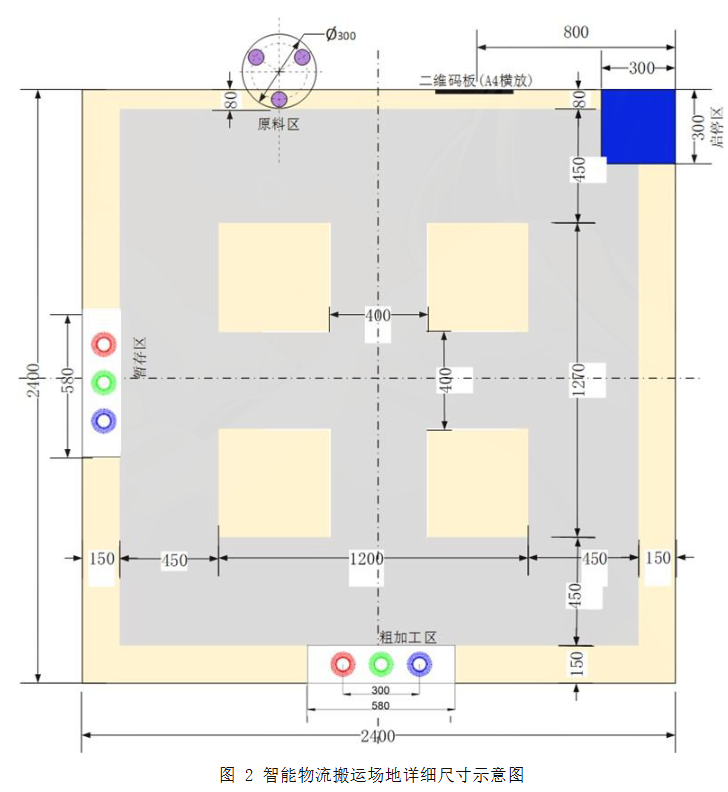
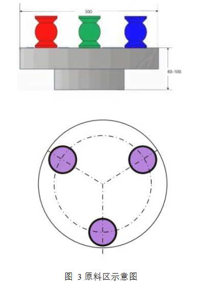
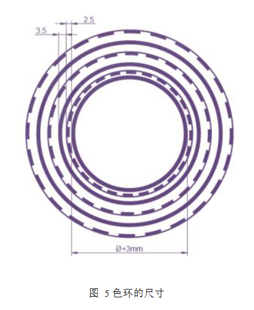

**智能物流赛道 · 视觉开发第0课** # AI进行开发的关键点 ——明确AI的能力边界 本文为使用AI开发工训赛智能物流赛道视觉部分的第0课。最终目的是告诉各位，在AI时代进行计算机视觉开发时，最低限度需要知道什么。 <!-- .element: class="lead" --> <div class="cover-tags"> <span>AI开发</span> <span>计算机视觉</span> <span>智能物流赛道</span> <span>能力边界</span> </div> notes: 开场白：30秒介绍主题——AI的能力边界和使用AI开发的最低认知基线。
## 引言：同样用 AI，为什么产出天差地别？ 一个外行和一个工程师，用同一个模型做同一个需求——写出来的代码、方案的可靠性、踩坑的数量，完全不同。差距不在模型，在**工程理解**。 本课要回答的问题就是： <!-- .element: class="lead" --> > **"至少理解到什么程度，AI 才能真正为你所用？"** notes: 强调核心矛盾：同样的AI工具，产出差距在工程理解。
## AI 的能力边界 <!-- .element: class="lead" -->
## AI 擅长 · AI 不擅长 <div class="two-col"> <article class="panel fragment fade-right"> <h3 style="color: var(--accent-c);">AI 擅长</h3> <ul> <li>生成代码骨架、写样板逻辑</li> <li>解释报错信息、查 API 文档</li> <li>把模糊需求翻译成具体实现</li> </ul> </article> <article class="panel fragment fade-left"> <h3 style="color: var(--accent-b);">AI 不擅长</h3> <ul> <li>判断方案的整体合理性——它能写，但不知道写的对不对路</li> <li>调试你的特定运行环境——它看不到你实际运行时的状态</li> <li>识别边缘 case——它能覆盖常规路径，但意外只发生在你没问到的地方</li> </ul> </article> </div> notes: 左栏是AI的优势，右栏是AI的短板。注意右栏是需要人工介入的关键风险区。
## 关键认知：代码能跑 ≠ 方案正确 AI 输出的代码几乎都能跑。但这恰恰是陷阱—— <div class="two-col" style="margin-top: 24px;"> <div class="panel" style="background: rgba(255, 210, 122, 0.08); border-color: rgba(255, 210, 122, 0.25);"> <p style="color: var(--accent-b); font-size: clamp(24px, 1.6vw, 32px);"> 外行看到"跑起来了"<br>就觉得完了 </p> </div> <div class="panel" style="background: rgba(131, 232, 255, 0.08); border-color: rgba(131, 232, 255, 0.25);"> <p style="color: var(--accent-a); font-size: clamp(24px, 1.6vw, 32px);"> 有经验的工程师看到"跑起来了"<br>只是开始 </p> </div> </div> <p style="margin-top: 24px;"> 能判断一段代码是否值得保留、一个方案是否经得起迭代，靠的是工程理解。 </p> notes: 这是本课最核心的认知——代码能跑不代表方案正确，工程理解才是关键。
## 最低认知基线：你至少要知道什么 <!-- .element: class="lead" -->
## 算法选型：传统 CV vs 深度学习 你需要知道传统 CV 和深度学习的基本区别，以及它们各自适合的场景。 <div class="two-col"> <article class="panel fragment fade-right"> <h3 style="color: var(--accent-c);">传统 CV</h3> <p>OpenCV / 图像处理</p> <ul> <li>可控、可调试</li> <li>轻量、不依赖数据</li> </ul> </article> <article class="panel fragment fade-left"> <h3 style="color: var(--accent-b);">深度学习</h3> <p>YOLO / 分类网络</p> <ul> <li>需要数据、训练复杂</li> <li>黑箱</li> </ul> </article> </div> <p style="margin-top: 16px; color: var(--accent-b);"> 选型原则？没有什么固定的选型原则。这正是你心中所想的"那个东西"和AI写出来的不一样的原因。 </p> notes: 重点说明两种方案的适用场景和选型没有固定原则。
## 代码阅读：能跟踪数据流即可 不需要逐行背诵，但能跟踪数据流： - 知道输入是什么、经过哪些步骤、输出什么 - 能画出大致的数据流向即可 notes: 强调数据流跟踪能力，而非代码记忆能力。
## 基本调试 <div class="panel" style="padding: 28px;"> <p style="font-size: clamp(26px, 1.8vw, 36px); line-height: 1.5; color: var(--accent-b);"> 调试能力是 AI 辅助开发中最不能被替代的一环。 </p> <ul style="margin-top: 18px;"> <li>AI 可以帮你读报错，现在也可以通过 tool 实际操作进行调试，但它不能完全替代你的调试能力</li> <li>一旦 AI 无法确定错误，排错依然需要靠你自己</li> </ul> <p style="margin-top: 16px; font-size: clamp(18px, 1.2vw, 24px); color: var(--ink-2);"> 计算机视觉的实际运行效果恰好是不好被 AI 评估的一环。尽管可以调用多模态模型进行图片理解甚至额外使用视频理解模型，但我们也需要考虑到钱包的厚度。 </p> </div> notes: 强调调试能力是AI最难替代的技能，尤其是计算机视觉领域。
## 方案评估：能判断方案是否靠谱 AI 给的方案，你能判断它是靠谱还是离谱。 <div class="panel" style="padding: 28px; margin-top: 18px; border-color: rgba(255, 210, 122, 0.4);"> <p style="font-size: clamp(26px, 1.8vw, 36px); line-height: 1.5; color: var(--accent-b);"> AI 会自信满满地给出一个完全不可行的方案。 </p> <ul style="margin-top: 18px;"> <li>你需要的最低能力是判断这个方案完全是空中楼阁或者不可能达到理想效果</li> <li>这种判断能力就是对于方案能力边界的理解</li> </ul> </div> notes: 方案评估能力是底线——AI会自信犯错，你得有能力识别。
## 视觉任务介绍 <!-- .element: class="lead" --> notes: 介绍智能物流赛道中视觉任务的三个应用场景。
## 场地视觉任务分布 <div class="two-col" style="align-items: center;"> <div style="text-align: center;"> <p></p> </div> <div> <p>视觉任务在场地中有三个部分可用到：</p> <ul> <li>扫描二维码获取任务</li> <li>原料区旋转台上物料识别</li> <li>加工区圆环识别（包括码垛）</li> </ul> </div> </div> notes: 场地图左侧展示，右侧列出三个视觉应用点。
## 关键区域识别 <div class="two-col"> <div class="panel" style="text-align: center; display: flex; flex-direction: column; align-items: center;"> <h3 style="color: var(--accent-c);">原料区</h3> <p style="margin-bottom: 12px;">旋转台上物料识别</p> <p></p> </div> <div class="panel" style="text-align: center; display: flex; flex-direction: column; align-items: center;"> <h3 style="color: var(--accent-b);">加工区</h3> <p style="margin-bottom: 12px;">圆环识别 & 码垛</p> <p></p> </div> </div> notes: 原料区和加工区的特写对比——左侧旋转台物料，右侧圆环与码垛。
## 结语 <div class="panel" style="padding: 32px;"> <p style="font-size: clamp(26px, 1.8vw, 36px); line-height: 1.6;"> 在我们这个智能物流赛道的视觉开发项目中，你没有必要成为 CV 专家。但如果你想用 AI 做好一个项目，你需要越过一条最低的认知基线。否则你将不知道你在写些什么。 </p> </div> <p style="margin-top: 32px; color: var(--accent-a);"> 在后续的课程中，我们将会借助 AI 来进行智能物流赛道视觉部分的开发。 </p> notes: 收尾——不需要成为专家，但需要越过认知基线，后续课程会实战使用AI进行开发。